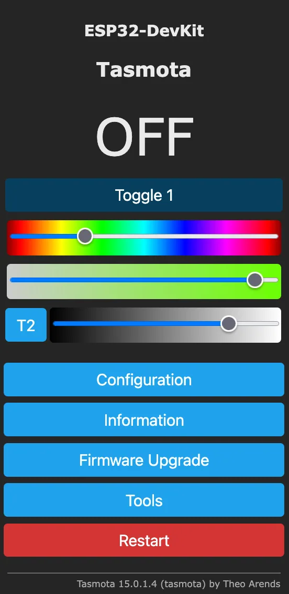

Tasmota ↗
替换部分智能插座、灯具与传感器固件，恢复本地控制。
先看你的设备兼容 ESP8266 / ESP32 芯片与引脚模板的智能设备
别忽略 同一商品可能换芯片；涉及市电的拆机不适合无经验用户。
仓库未归档替换固件
ESP32 不是目的，它只是让旧硬件重新联网、显示、播放或桥接信号的一种工具。先认清设备和芯片，再选固件，能少买错板子，也少拆坏一台机器。
C13 · 资料核查 2026-10-21 · 未进行实机测试
| 手里的硬件 | 可以变成 | 实现路线 | 成熟度 | 先停手的情况 |
|---|---|---|---|---|
| 智能插座、开关、灯泡 | 脱离厂商云的本地控制设备 | Tasmota / OpenBeken / ESPHome | 成熟，但必须先确认芯片、模组与引脚 | 芯片不明、没有恢复路径，或需要带市电拆机 |
| 废弃电子价签 | 超低功耗日历、状态牌或信息屏 | OpenEPaperLink | 按标签型号和无线芯片判断 | 标签型号不在支持资料中，或没有对应刷写夹具 |
| 闲置灯带或 LED 控制器 | 可联网控制的氛围灯、状态灯或提示灯 | WLED | 可寻址灯带路线成熟；模拟灯带需要额外驱动 | 电压、电流、地线或灯珠协议不清楚 |
| 有 AUX / 线路输入的旧音响 | 局域网音乐播放器、蓝牙或 AirPlay 接收端 | Squeezelite-ESP32 | 需要合适的 ESP32、DAC 和音频输入路径 | 只有喇叭输出、误把 ESP 当功放，或板卡没有所需 PSRAM |
| 散落在家里的 BLE 传感器 | Home Assistant 的蓝牙覆盖节点 | ESPHome Bluetooth Proxy | ESP32 可转发广播和主动连接；设备仍需对应集成 | 目标不是 BLE、协议加密未支持，或需要超过稳定连接数 |
| 433/315/868 MHz 遥控器、传感器或红外设备 | 把旧无线信号桥接到 MQTT 和家庭自动化 | OpenMQTTGateway | 可用，但收发模块、频率、解码器与地区规则要逐项匹配 | 频率或调制方式不明、当地法规不允许发射，或设备使用滚动码 |
记录完整型号、主板照片、无线模组丝印、供电电压、可见串口焊盘和原机还能否启动。先备份能读取的原固件与配置，并找到明确的恢复方法。品牌名不能代替芯片型号：同一款 Tuya 外壳可能先后使用 ESP8266、BK7231、RTL87xx 或其他模组。
如果设备直接接市电，普通 USB 转串口、电脑地线和裸露电源板之间可能形成危险回路。没有隔离电源、断电验证和带电操作经验时，不拆智能插座、墙壁开关或灯具；可以先从 USB 供电开发板、低压灯带和外置传感器开始。
确认是 ESP8266/ESP8285 或受支持的 ESP32 后，可查看 Tasmota；它提供 Web 配置、MQTT/HTTP 控制和设备恢复说明。若是 BK72xx、RTL87xx 或 LN882x 等模组，查看 OpenBeken 或 ESPHome 的 LibreTiny 平台，并严格匹配 CPU、板型、闪存布局和引脚。
“能刷进去”不等于继电器、按键、指示灯和功率计都能正确工作。先找同一模组与同一主板修订的引脚资料；首台设备完成断电、重启、离线控制和恢复测试后，再决定是否处理同批其他设备。
OpenEPaperLink 由接入点固件、标签固件以及刷写接口组成。它适合项目明确列出的标签类型，可把电子价签用于日历、房间状态、传感器数据或简单图片；通常还需要 ESP32 接入点、相应无线标签和刷写夹具。
外观相似不表示主控、屏幕驱动和无线协议相同。找不到准确标签类型、PCB 标识、无线芯片或刷写接点时，只做拆解记录，不向相近型号套用固件。
WLED 很适合把 ESP32 与 WS2812B 一类可寻址灯带组合成网页可控的灯光系统。旧控制器能否直接复用取决于主控能否刷写、灯带协议、供电和输出电路；普通模拟 RGB 灯带需要 MOSFET 等驱动，不能把大电流直接接到 GPIO。
先确认灯带额定电压、最大电流、数据方向和地线连接。长线或 5V 像素可能需要电平转换，电源线要按负载选线并加保险。测试从少量灯珠和低亮度开始。
Squeezelite-ESP32 可让合适的 ESP32 板卡成为 Lyrion Music Server 播放端，并可提供蓝牙、AirPlay 或 Spotify Connect 等附加模式。常见路线是 ESP32 加 I2S DAC，把线路电平信号送入旧音响的 AUX；原音响仍负责功率放大。
项目文档要求典型 ESP32 路线具备至少 4 MB Flash 与 4 MB PSRAM，并明确 WROOM 通常不满足 PSRAM 条件。先确认板卡、DAC 和音响输入；不要把喇叭输出接入 ESP，也不要期待一块 ESP32 开发板直接驱动无源音箱。
ESPHome Bluetooth Proxy 可扩大 Home Assistant 对 BLE 设备的覆盖。ESP32 支持广播转发和主动 GATT 连接，但目标设备仍要有对应的 Home Assistant 集成；代理本身不会自动破解私有或不兼容协议。
OpenMQTTGateway 可把 BLE、红外以及多种无线模块收到的信号转换为 MQTT。具体能力取决于 ESP 板、外接收发模块、频率、调制方式和解码器。滚动码遥控器、加密协议以及受地区限制的发射用途不能按普通固定码设备处理。
每条路线先定义一个可观察结果：插座断网仍能开关；价签重启后继续更新；灯带满负载不过热；音响可连续播放并在断电后恢复；代理能稳定接收一台真实传感器。记录板卡、芯片、固件版本、接线、供电、成功和失败条件。
这页依据公开项目文档整理，KitAgain 没有对这些具体硬件做实机认证。型号、芯片、电源或恢复路径任一项不清楚时先停手，到社区贴出打码后的板卡照片和丝印继续核对。

替换部分智能插座、灯具与传感器固件，恢复本地控制。
先看你的设备兼容 ESP8266 / ESP32 芯片与引脚模板的智能设备
别忽略 同一商品可能换芯片；涉及市电的拆机不适合无经验用户。
让部分非 ESP 的云依赖智能设备改用本地 MQTT 等控制。
先看你的设备项目支持的 BK7231 等芯片和板型
别忽略 芯片、引脚、校准数据和刷机方式必须逐板确认。
为可编程的旧传感器、插座和 DIY 板重新配置本地用途。
先看你的设备支持平台与设备配置覆盖的 ESP 等微控制器设备
别忽略 按具体设备配置判断复用，不把购买新开发板的演示计为旧硬件成功案例。
将旧主机转为轻量网络音频播放器，连接 Squeezebox 生态服务器。
先看你的设备可运行支持平台二进制的旧 PC / Linux 单板机
别忽略 是软件播放器，不保证修复任意实体 Squeezebox 的云功能。